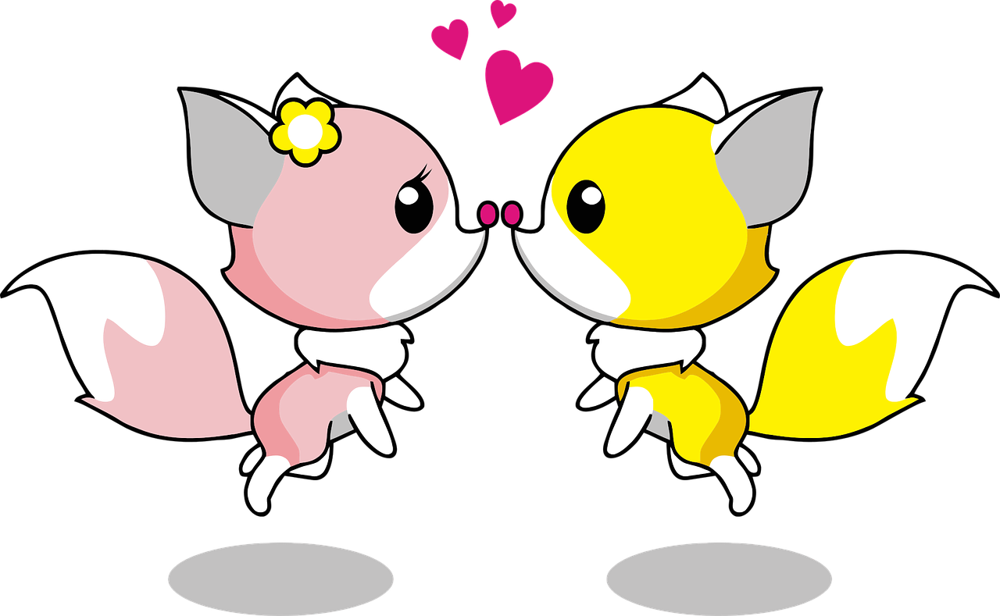

Fox
Foxes live in the wild, a group of foxes is called skulk or leash
- Foxes have whiskers on their legs and face, which help them to navigate better.
-
Male foxes are called "dog fox" while females are called "vixens".
-
Grey foxes can retract their claws.
-
Tip of the red foxes' tail is white.
-
Unlike wolves they hunt on their own rather in packs.

Made with Mozilla guide